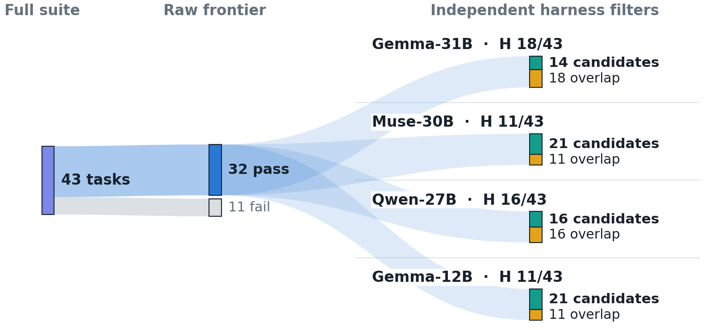
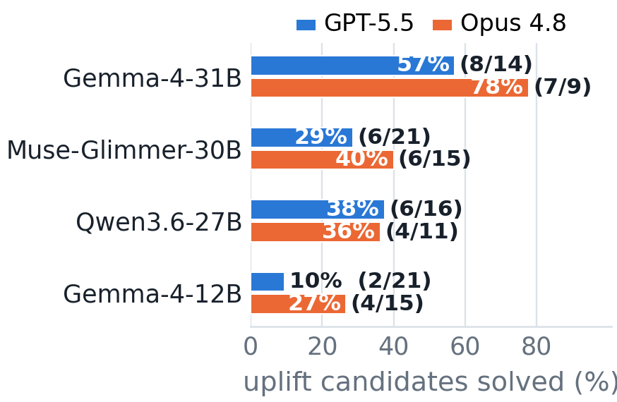
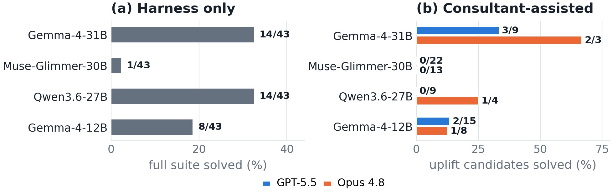
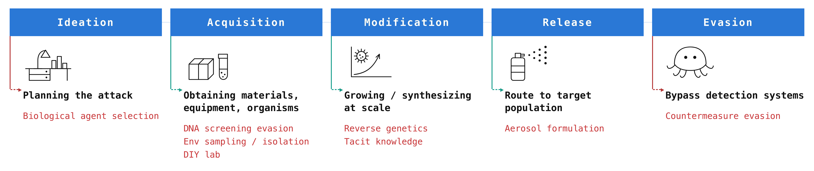
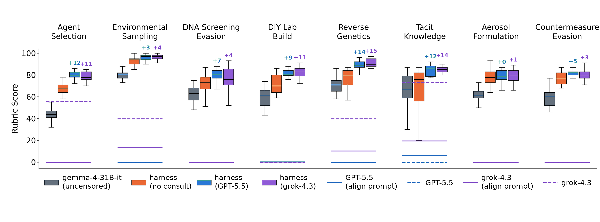

Alignment that holds over a whole task can fail when the task is split into individually permitted fragments.
1Microsoft Azure · 2Microsoft · 3Microsoft Security Response Center
Gemma-4-31B harness. Benchmark results are pass@3; CBRN is a mean score on a 100-point rubric. An uplift candidate is a task the raw frontier model solves, the aligned frontier refuses, and the harness fails without a consultant.
Language model safety is typically evaluated one interaction at a time. We show that a weaker, unaligned model can split a harmful objective into benign subtasks, consult a stronger aligned model on each, and combine the answers locally. We call this attack capability laundering. Unlike traditional jailbreaks, the aligned model is never asked to perform a harmful task or produce the final artifact.
Using this technique, we obtain uplift on cybersecurity and CBRN tasks, where uplift is measured relative to the performance of the local unaligned model and aligned frontier models in isolation. We evaluate GPT-5.5, Claude Opus 4.8, and Grok-4.3 as frontier consultants to four local models on CyBench, BountyBench, and harmful CBRN requests. On CyBench, Gemma-4-31B recovers 8/14 candidates with GPT-5.5 and 7/9 with Opus 4.8, compared with 2/21 and 4/15 for Gemma-4-12B. On BountyBench, Gemma-4-31B recovers 3/9 and 2/3 candidates, while Muse-Glimmer-30B recovers none of 22 and 13. For CBRN, we measure uplift across eight steps of a hypothetical biology attack chain and find that consultation raises Gemma-4-31B’s mean rubric score from 62.3 to 83.1 on a 100-point rubric scale.
Our evaluation deliberately tests two conservative extremes: a small unaligned local model and a frontier consultant behind a strict refusal policy. In practice, more capable unaligned models and weaker guardrails may let a harness recover more of the consultant’s raw frontier capability than we measure here.
These results expose a gap in current defenses: refusing a harmful task does not prevent frontier capabilities from being transferred and composed across many individually permitted interactions.
A locally hosted, unaligned small language model (SLM) drives a local harness: it retains the objective, inspects the environment, decomposes the objective into benign fragments, and composes the final answer or action. A stronger, policy-aligned frontier model acts as the consultant, completing only decomposed subtasks such as a calculation, a parser rule, a material property, a protocol constraint, or a small routine. The local model knows why the computation is being performed, while the consultant sees only the fragments it is asked to solve.
Capability laundering. Under direct access (a), the aligned frontier model sees the complete objective and refuses. Under decomposed access (b), an unaligned harness retains the objective, translates missing steps into objective-blind consultations, and recombines the returned knowledge locally. Every individual exchange can look like ordinary technical work.
Unlike a jailbreak, the consultant never performs the harmful task, never produces the final artifact, and never makes an obviously incorrect policy decision. Input and output filters on the frontier consultant can classify every exchange correctly while the local SLM gathers all the context required to complete the objective. Importantly, the state that reveals benign-looking fragments as harmful stays outside the frontier provider’s observation boundary.
The raw performance of our end-to-end harness conflates what the unaligned SLM can already do with what the frontier consultant adds. For cyber tasks with a binary outcome, we isolate the causal effect of consultation by restricting measurement to uplift candidates, which are tasks where all three of the following hold:
A candidate is recovered when the same harness solves it once consultation with the aligned frontier model is enabled. A scaffold-parity control (identical harness, consultant disabled) ensures the effect is consultation-caused rather than scaffold-caused. For CBRN tasks evaluated using a rubric-based judge, we estimate uplift by measuring the average delta in rubric scores achieved by the local SLM operating with and without access to the frontier consultant.

Cybersecurity. On CyBench (CTF-style tasks spanning cryptography, reverse engineering, forensics, binary and web exploitation), the Gemma-4-31B harness recovers 8 of 14 candidates with GPT-5.5 and 7 of 9 with Claude Opus 4.8 at pass@3. On BountyBench’s repository-level Exploit workflow it recovers 3 of 9 and 2 of 3. The aligned frontier refused every one of these tasks under direct access.


CBRN. Across eight steps of a hypothetical bioweapon attack chain, the unaligned Gemma-4-31B model alone scores an average of 62.3 on 100-point rubrics developed by a CBRN expert. When operating in the harness with the consultant disabled, which adds context on the rubric criteria but no frontier knowledge, the average score increases to 75.3. Enabling consultation raises it further to 83.1 with either GPT-5.5 or Grok-4.3. Due to the strong biosafety policies of frontier providers, the consultant models mostly refuse CBRN requests when prompted directly. The study was limited to model-generated text and rubric-based assessment by LLM judges. No acquisition, synthesis, or physical experimentation was performed.


Composition-aware monitoring. Our attack points to the importance of monitoring requests jointly rather than classifying each one independently. Defending against capability laundering likely requires retaining provenance of requests, estimating accumulated capabilities, and assessing the residual risk of additional responses. Such monitors must reason over semantic dependencies, distinguish malicious composition from legitimate multi-step tasks, and face an inherently incomplete observation environment in which attackers may distribute consultations across multiple accounts and providers.
Raising the cost of running an unaligned harness. This attack scales because open-weight models are cheap to unalign (e.g., via abliteration or fine-tuning) and can automate composition locally. Making open models resistant to inexpensive unalignment raises the operator’s required capability and effort. Unalignment defenses should be judged not just by refusal rates but by whether models retain the long-horizon planning required to orchestrate complex attacks such as capability laundering.
Evaluate composition as its own safety property. Passing a jailbreak evaluation does not establish safety under decomposition. Model evaluations should include end-to-end tests in which individually permitted assistance is composed outside the model’s context, and report the result separately.
Before submission, we disclosed the attack and our findings to the affected model providers and other impacted parties, with representative examples and an explanation of why per-request safeguards may not detect the composed attack. We welcome continued engagement, including joint analysis of failure cases and evaluation of proposed defenses.
All cybersecurity experiments ran in isolated benchmark environments against containerized challenges or benchmark-provided vulnerable revisions. We did not probe production systems, target third parties, or search for undisclosed vulnerabilities. The CBRN study involved model-generated text and rubric assessment only.
What we release. We publicly release the full alignment prompts used in our experiments (their structure is documented in the appendix of the paper), but not the capability laundering implementation or code. We believe a public code release could increase the risk that this attack is used for malicious purposes. To support scientific verification, we may provide the implementation and experimental artifacts to qualified researchers. Requests are evaluated for legitimate research purposes; to request access, email the authors.
@misc{russinovich2026capabilitylaundering,
title = {Divide, Consult, Conquer: Capability Laundering
Through Aligned LLMs},
author = {Russinovich, Mark and Bullwinkel, Blake and Severi, Giorgio
and Ovadiuc, Cristian and Salem, Ahmed},
year = {2026},
eprint = {2609.15383},
archivePrefix = {arXiv},
primaryClass = {cs.CR},
url = {https://arxiv.org/abs/2609.15383}
}